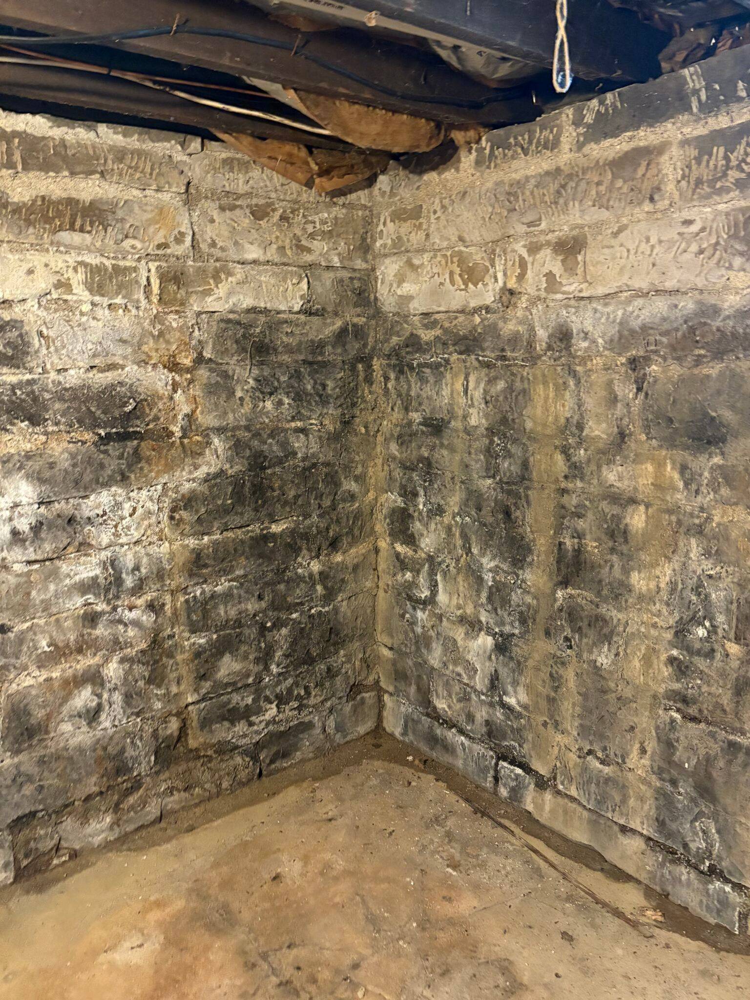

What is your Boise basement built from, and why does that decide where the mold is?
Boise’s basements span more than a century of building methods. The foundation material affects how water moves through it, where mold collects, and what a permanent fix looks like.
- Stone & rubble
- Brick
- Concrete block
- Poured concrete

Know your foundation type? Mention it when you call.It helps the specialist bring the right equipment and plan the right fix.
Call (321) 985-3339Find your foundation
Look at an unfinished section of basement wall, often in the utility room or behind the water heater.
Stone or rubble
Looks like: irregular stones in mortar, often sandstone.
Water behavior: mortar joints erode over time, letting water and soil through. Damp is normal, but standing water isn’t.
Mold pattern: on framing and stored items near the walls rather than the stone.
Brick
Looks like: red brick, sometimes parged with a cement coat.
Water behavior: brick absorbs and releases moisture, and spalling or flaking means repeated wet-dry cycles.
Mold pattern: on wood that touches the brick, like sill plates and furring strips.
Concrete block
Looks like: gray rectangular blocks with mortar lines.
Water behavior: hollow cores fill with water and seep at the base, and horizontal cracks mean soil pressure.
Mold pattern: at the bottom of finished walls and under carpet along the edges.
Poured concrete
Looks like: smooth walls, sometimes with form-tie marks in a grid.
Water behavior: mostly through cracks, tie holes and the floor-wall joint.
Mold pattern: behind finished walls along one specific stretch where water comes in.
Removal is half the job. Keeping it dry is the other half.
Mold removal in a Boise basement follows the same core process as anywhere else: contain, remove affected materials, clean, dry and verify. What changes by foundation is the long-term fix.
Stone and brick foundations usually do best left breathable. Sealing them with the wrong coating can trap water in the masonry, so drainage outside and a dehumidifier inside are typical. Block walls may need their cores drained at the base. Poured concrete often comes down to sealing specific cracks and fixing grading.
Older basements also tend to have lower ceilings, older wiring and sometimes asbestos pipe wrap, all of which a good pro will flag before work starts.
Common questions
Can I finish an old stone basement in Boise?
Many people do, but older masonry foundations need extra care. Moisture management usually comes first, and materials that tolerate occasional dampness are used against the wall.
Is it normal for an old Boise basement to smell damp?
Some earthy smell is common in century-old basements. A strong musty smell, visible growth or a smell that spreads upstairs means moisture levels are high enough to address.
How long does basement mold removal take?
Most residential basement jobs take three to seven days, including drying. Larger finished basements or ones with water entry repairs take longer.